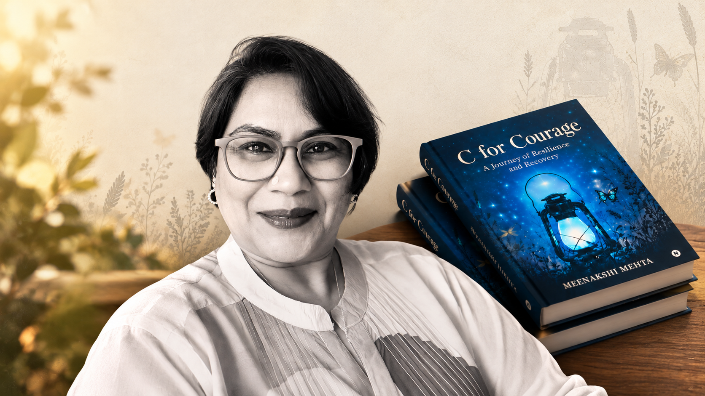

I have been a teacher, a theatre practitioner, a facilitator, a storyteller, a communications professional and an artist. And somewhere along the way, I realised that they were never really different things. They were simply different ways of doing what I have always loved — connecting with people through stories.
I was teaching young children, and very quickly learnt that a textbook could only take you so far. If you wanted a child to truly understand something, you had to turn it into a story. An anecdote. An experience. Something they could see, feel and relate to.
At 26, I moved into behavioural learning and began designing and facilitating programmes for adults. I found myself using theatre, literature, psychology and the arts to help people understand themselves and each other better.
Our philosophy was simple: making theatre work for you.
We used theatre not just as performance, but as a way of learning, exploring and communicating. I designed learning modules and conducted corporate workshops on behavioural skills. I wrote plays, directed them, produced them and performed. I worked with children, created workshops for adults and built spaces where people who loved theatre could actually experience it.
It taught me about human behaviour, empathy, conflict, communication and the incredible power of a well-told story.
My journey then took me into the world of communications and marketing, eventually leading me to head Marcom. From a classroom at 21, to behavioural learning at 26, to leading communications at 37 — every chapter added another layer to the storyteller I was becoming.
Art has been part of my life since I was nine or ten. My mother was an artist, so I grew up surrounded by paintings, colours and creativity.
Many years ago, my mother and I started Aakar — initially to showcase and sell our work and to create a platform for art. What began as a passion project has stayed that way.
Today, through Aakar, I also sell art for a cause, using it to raise funds for cancer patients. It is my way of bringing together something I have inherited, something I love and something I believe in.
Teacher. Theatre-maker. Facilitator. Communicator. Artist.
Storyteller.
But perhaps I was always just joining the
dots.
Because whether I was teaching a child, facilitating a
room full of executives, directing a play, building a
communication campaign or holding a paintbrush, I was doing
essentially the same thing:
That is what storytelling means to me.
It is not just about telling stories.
It is about making people care.
There Are Rivers in The Sky, Prix Fragonard de Littérature étrangère, 2026
There Are Rivers in The Sky, The Orwell Prize for Political Fiction finalist, 2025
There Are Rivers in The Sky, Buybook’s Book of the Year for 2024, Bosnia
The Island of Missing Trees shortlisted for British Book Awards, 2023
The Island of Missing Trees, shortlisted for Edward Stanford Travel Writing Awards, 2022
Patron of Human Rights Watch Book Club
The Island of Missing Trees is a Reese's Book Club choice
Fellow and Vice-President of the Royal Society of Literature
There Are Rivers in The Sky, Le Prix Fémina Etranger finalist, 2025
There Are Rivers in The Sky, Fiction with a Sense of Place Award, Edward Stanford Travel Writing Awards 2025
British Academy President's Medal, 2024
The Island of Missing Trees, shortlisted for Women’s Prize For Fiction, 2022
The Island of Missing Trees, shortlisted for Costa Novel Award, 2021
Halldór Laxness International Literature Prize, 2021
Bard College Honorary Degree of Doctor of Humane Letters, 2021
PEN Nabokov Prize judge, 2020